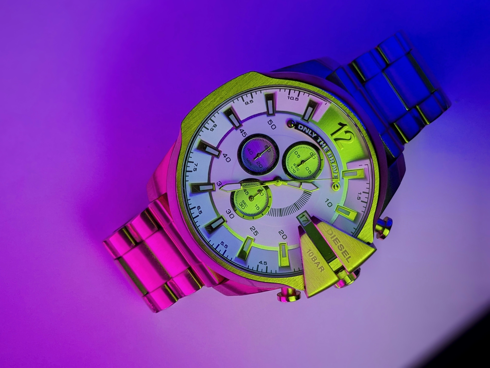

New and Improved

Novus Watch Series IV
The pinnacle of fashion and tech. This wearable piece is an homage to gilded palaces and minimal regalia, combining nouveau-deco and brutalism influences in a compact, Swiss-made watch.